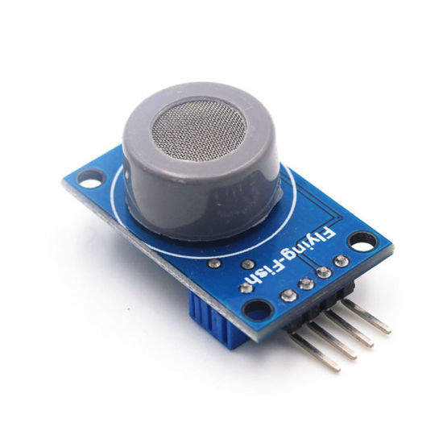
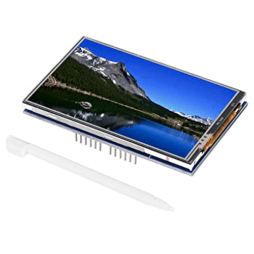
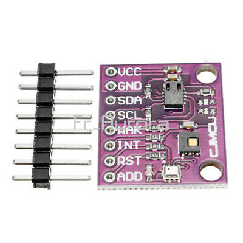
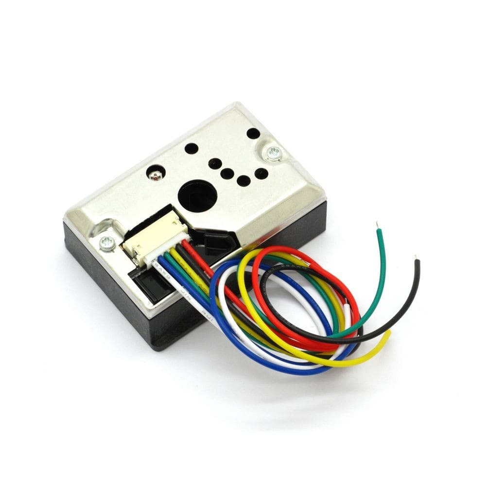
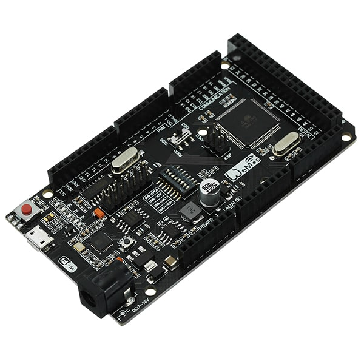
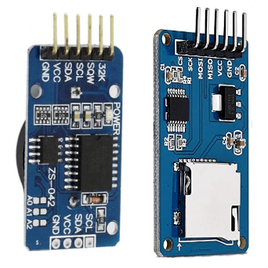

Comment fonctionne cette CaptoBox ?
Pour découvrir le fonctionnement de cette captobox, vous pouvez cliquer sur les différentes boites ci dessous, vous y trouverez des explications sur le fonctionnement des différents capteurs et composants qui la constituent.
Pour découvrir l'utilisation de la captobox, cliquez sur la boite "mode d'emploi"
, ci dessous.

Le MQ7 :
Le MQ7 est un capteur de monoxyde de carbone.
Il fonctionne grâce à une membrane en métal, dont la conductivité électrique change en fonction de la quantité de monoxyde de carbone avec laquelle elle entre en contact.
Pour nettoyer cette membrane et enlever des particules qui pourraient fausser les valeurs des mesures, il suffit de changer la tension d’alimentation du capteur. Le capteur a donc 2 modes : mode chauffe avec la tension d’alimentation au maximum, soit
5V, mode mesure, avec la tension à 20 % de la tension max, soit 1,4V.
Pour pouvoir avoir une valeur fiable, il est impératif que le capteur suive des cycles de chauffe : chauffe à 5V pendant 1min30, puis, mode mesure pendant 60s, puis retour au premier cycle.

L'ecran tactile :
Pour pouvoir afficher les données des capteurs, la Captobox dispose d’un écran LCD tactile.
Cet écran a une résolution de 480 pixels par 320 pixels ( 480x320 ).
Sa particularité est qu’il dispose d’une technologie tactile « résistive ». Contrairement aux écrans à technologie « capacitive », que nous avons sur nos smartphones, et qui captent le peu d’électricité émise par le bout de nos doigts pour fonctionner,
les écrans résistifs, eux, captent une pression exercée sur la dalle tactile. On peut donc utiliser nos doigts, mais aussi des stylets en plastique non conducteurs ! ( attention toutefois à ne pas abîmer l’écran !!! )

Le CJMCU-8128 :
La Captobox est équipée d’un capteur CJMCU-8128. Il s’agit d’un composant 3 en 1, embarquant 3 capteurs différents : un BME280 ( capteur de température et pression ), ccs811 ( capteur de COV et eCO2 ) et un SI7021 ( capteur de température et humidité
).
Le capteur de COV et de eCO2 est celui qui nous intéresse le plus ici.
Ce capteur est un capteur de COV avant d’être un capteur de CO2, mais, il embarque une petite intelligence capable de déduire le taux de CO2 en fonction du taux de COV, c’est pour cela que l’on dit eCO2, qui veut dire « équivalent CO2 ».

Le capteur optique de particules :
Ce capteur capte les particules en suspension dans l’air grâce à un système optique.
Il se compose d’une led infrarouge, placée dans un coin du capteur, d’un photo transistor ( un interrupteur électrique qui laisse passer le courant en fonction de la lumière qu’il reçoit, plus il reçoit de lumière, plus il laisse passer de courant ) placé
dans le coin opposé, et d’un trou qui sépare les deux. Lorsque de l’air pur passe par le trou, le photo transistor reçoit toute la lumière de la led, et laisse donc passer tout le courant. Mais lorsque de l’air chargé de particules
en suspension passe par le trou, la lumière émise par la led est légèrement atténuée, le transistor reçoit moins de lumière et laisse donc passer moins de courant. La teneur de particules en suspension dans l’air augmente donc
lorsque la valeur de sortie de la tension du capteur diminue.

Le Wemos Mega :
Le Wemos Mega est la carte électronique principale de la Captobox, aussi appelée « carte mère ».
Elle dispose de connecteurs que l’on appel les « pins », les « entrées/sorties » ou encore les « GPIO » . Il s’agit de petits connecteurs électroniques de type femelle, dans lesquels les extensions viennent se brancher.
On peut ainsi connecter des moteurs, des capteurs, des lumières, ou d’autres types d’actionneurs à la carte mère.
Cette carte électronique est une carte de type « Arduino Mega », elle a donc une taille spécifique pour pouvoir accueillir des extensions que l’on appelle des « shields ». L’écran tactile est un Shield.
La particularité de cette carte réside dans ses microcontrôleurs ( abrégé µcontrôleur, ou, µc ). Un microcontrôleur est un composant électronique qui va jouer le rôle de cerveau de la carte, c’est lui qui va faire tous les calculs et commander l’ensemble.
La très grande majorité des cartes électroniques du même type ne possèdent qu’un seul microcontrôleur, hors, cette carte en dispose de deux.
Le premier est un ATMEGA 2560 du fabriquant ATMEL, c’est un très gros µcontrôleur qui peut effectuer beaucoup de calculs et gérer beaucoup d’entrées/sorties et de ports de communications, mais, il ne dispose pas de connectivité sans fil !
Le second est un ESP8266 du fabricant ESPRESSIF, qui lui, est beaucoup plus petit, mais a la particularité d’avoir une connectivité WIFI intégrée !
La carte marche donc en tandem avec ces 2 composants, le ATMEGA2560 accède aux données des capteurs et à l’écran tactile, et les envoie a l’ESP8266 qui lui se charge de l’interface web et du WIFI.
Les 2 composants sont reliés par un port de communication UART ( Universal Asynchrous Receiver Transmitter ).

Les modules complementaires:
Pour fonctionner correctement, la Captobox a besoin d’autres composants électroniques comme un module d’horloge ( RTC ) et un module de carte SD.
La carte mère de la Captobox peut effectuer toute seule la gestion du temps, mais, elle n’est pas d’une grande précision. Par exemple, si la carte devait compter toute les secondes qui passent pour gérer le temps, elle aurait un décalage de 1 milliseconde
par seconde. C’est à dire qu’au lieu de compter 1 seconde, elle compte 1,001 secondes ( différence imperceptible par l’Être humain ). Sauf qu’avec ce léger écart, la carte aura déjà 1,4 min de décalage avec le temps réel au
bout de 24h, 2,8 min au bout de 48h, etc. Ce décalage peut poser problème lorsque l’ont veut faire des mesures sur le long terme en utilisant une échelle temporaire.
Pour palier ce problème, on utilise un module d’horloge à temps réel ( Real Time Clock en anglais, RTC ). Un module RTC est un composant électronique qui n’a que pour fonction de gérer le temps, mais, avec une très grande précision, ce qui permet de n’avoir
un décalage d’une minute qu’au bout d’une année.
Ce capteur est connecté à la carte mère avec une connexion I2C ( Inter-Integrated Circuit ). La norme I2C a la particularité de ne nécessiter que 3 fils pour fonctionner, donc d’économiser de la place, et de pouvoir connecter de nombreux composants sur
ces 3 mêmes fils.
Pour pouvoir sauvegarder les données mesurées sur le long terme, nous avons besoin d’espace de stockage, hors, la carte mère n’en dispose que de très très peu ( pas assez pour stocker une petite photo ). On a donc besoin d’un adaptateur pour connecter
une carte micro SD et pouvoir stocker les données sur ce support.
Cet adaptateur utilise une connexion SPI ( Serial Peripherical Interface ) pour communiquer avec la carte mère. Le SPI utilise 4 fils pour fonctionner, mais, il est plus rapide que l’I2C.